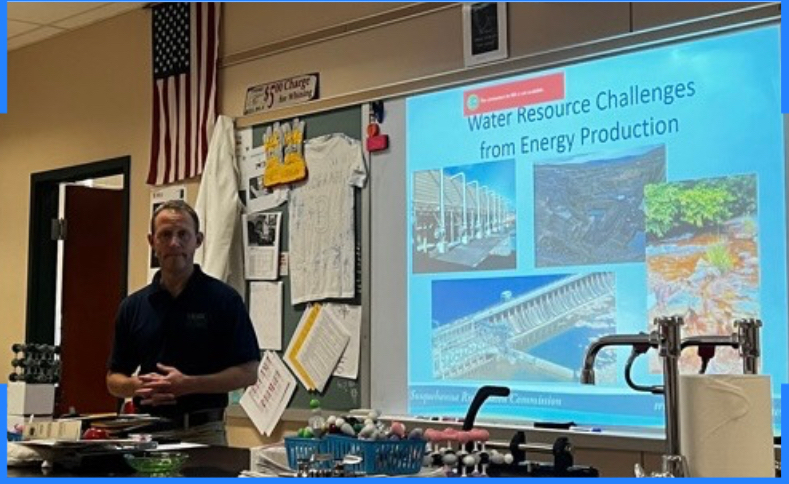

Meetings
SRBC Event (11/05/24)
We would like to give a huge thank you to Mr. Dehoff, Executive Director P.E of the Susquehanna River Basin Commission, for coming to Cumberland Valley HS to showcase students the nexus between energy and water. Mr. Dehoff provided excellent examples on energy related water usage in Central PA, as well as showing the students current trends in energy production and water conservation. He even went further in showing us initiatives to improve sustainability. We are incredibly grateful for the insight SRBC has provided our students!
Future Meetings
Stay tuned for future collaboration! Currently, we are teaming with Harrisburg University and American Water for tours and insightful presentations.